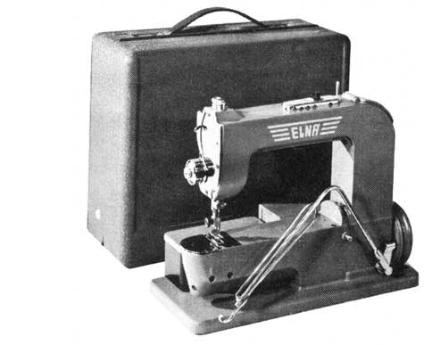
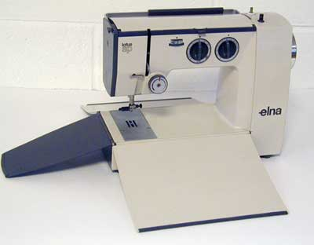
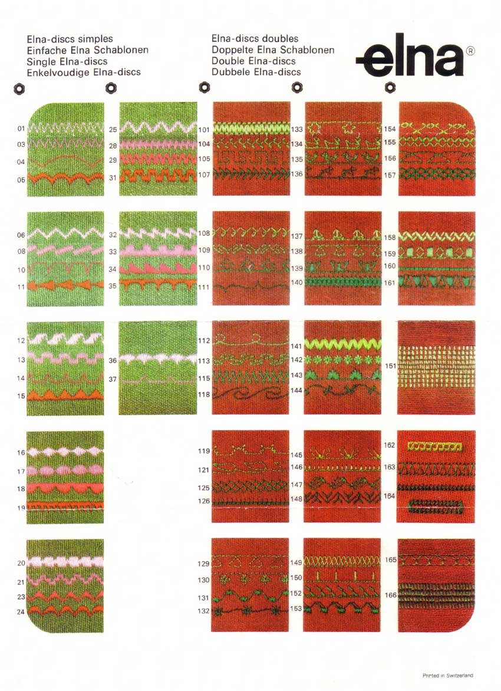

~~~ THE NEEDLEBAR ~~~
Acknowledgements: History of Sewing and Household Sewing Machines Tavaro SA Geneva 1980. Elna Technical Reference Material. Knowledge accumulated during my time with Elna and in the Industry generally. Some Photographs from the NeedleBar Picture Library.


History of Elna
Sewing Machines
Tavaro SA Geneva Switzerland
by Les Godfrey
The Spanish engineer Dr. Ramon Casas Robert returned to his parents' home in 1933 after completing his studies. Whilst at home he was asked to repair an old sewing machine, this gave him the opportunity to study the mechanism in which he became totally absorbed. He remembered he had friends who had a corset factory and paid them a visit. It is common belief that these friends may have also included an Aunt. He was astonished by the number of special industrial machines employed which had a cylindrical arm on which tubular pieces of fabric could be sewn. His inventor's mind quickly thought of the housewife and her need to repair trouser legs or sleeves; he realized that the dimensions of such a machine would need to be reduced. Thus the idea that gave birth to the first modern household sewing machine with a free arm was conceived. It is thought a working prototype had been completed by 1934. The machine design included a free arm, built-in motor and light. The carry case incorporated a unique feature having the shape of the free arm cut out of its side enabling the case to extend the sewing area.
The outbreak of the Spanish Civil War (July 1936 to April 1939) caused him to emigrate to Switzerland to continue the development of his machine. He at first with a group of business men formed a company named Electrina from which the Elna name is derived. However, in order to manufacture the machine it quickly became clear that more capital and modern well equipped workshops would be needed. After successful negotiations with Tavaro SA, Geneva, a manufacturer of precision timing mechanisms for the armaments industry, which resulted in Tavaro securing the rights to the machine and enlisting his services, work finally began. By 1940 the first machines were produced for the home market and were an immediate success.
Interestingly many of Ramon Casas Robert's patents were assigned to Mefina SA, Binningen in Switzerland. Later Mefina moved to Fribourg, Switzerland. It is unclear what the precise relationship between Mefina and Tavaro was, although Mefina Annual Reports are held in the Tavaro Archives.
With World War 2 now underway export of the machine did not commence until 1948. The Elna 1 as it became known, was in production until 1952, the exact number of machines produced is not known. It was finally replaced by the Elna Supermatic, an enormous leap forward in technology. The Star Series arrived in 1964, followed by the first of the compact Lotus Series in 1968.
Tavaro continued to develop the Elna brand, releasing the Elnapress in 1973, electronic machines in 1978, computer machines in 1989 and, as a consequence, underwent many expansions in production establishing themselves world wide. Unfortunately during the 1990’s with escalating development costs of new models and a slow down in sales, they went the way of other European manufacturers before them and finally in 1995 the company went into bankruptcy and was sold off.
The Elna name continued in the market place with machines being produced in Asia. In August 2006 the Janome Sewing Machine Company Ltd, in Tokyo, Japan acquired the worldwide operations of Elna International Corporation SA, Switzerland.
ELNA
MODELS PRODUCED
1940 – 1952 Elna 1

Whilst the first Elna was not given a model number as such, it became known as the Elna 1, it is also known affectionately as the Grasshopper. Such was the soundness of its original design that only minor modifications were made during its production life. Early machines incorporated a brake pad on the knee lever which was later dropped. Other changes were the use of a slightly smaller motor resulting in a flat motor cover and changes to the carrying case.
Description as follows:
Brake
Pad

Portable Straight
Stitch with Free Arm, built-in Motor and Light. Knee Control with Brake Pad,
Horizontal Rotary Hook, drop-in Bobbin, Stitch Regulator situated on top of
and at the end of the free arm. Light weight aluminium casting, Colour Green,
unusual as the standard colour for this period was black with the usual gold
decoration. The accessory box sat snugly behind the free arm. The Carrying
Case fitted around the free arm enabling the case to extend the sewing area,
a unique feature for the time.
1952 – 1956 Elna Supermatic Elna 2
 The
first Supermatic was launched on the 19th April 1952, at the Swiss Industries
Fair in Basle. Again not given a model number as such, the early Supermatics
became known as the Elna 2. When compared to the Elna 1 this new machine was
generations ahead in technology. The first machine capable of automatic reverse
feed stitches, creating a new benchmark for domestic sewing machines, decorative
and practical stitches such as overlock and stretch. Making all this possible
was the deployment of a double profile Disc or Cam. One profile of which controlled
the needle movement from left to right, whilst at the same time the second
profile controlled the feed movement forward and backwards. This type of stitch
was called super-automatic which when abbreviated to Supermatic gave the Elna
its name. Many hours of research and development went into perfecting this
new system. These new stitches were created by a central cam drive which Tavaro
called an Elnagraph, and the introduction of a new innovative feed dog with
pyramid shape teeth giving positive feed in either direction, forward or reverse,
compared with the "factory roof profile" feed dog previously used.
As was the norm at the time, cams were changed by removing a lock nut, enabling
the cam to be lifted out. This task was assisted with a special forked tool
supplied with the machine.
The
first Supermatic was launched on the 19th April 1952, at the Swiss Industries
Fair in Basle. Again not given a model number as such, the early Supermatics
became known as the Elna 2. When compared to the Elna 1 this new machine was
generations ahead in technology. The first machine capable of automatic reverse
feed stitches, creating a new benchmark for domestic sewing machines, decorative
and practical stitches such as overlock and stretch. Making all this possible
was the deployment of a double profile Disc or Cam. One profile of which controlled
the needle movement from left to right, whilst at the same time the second
profile controlled the feed movement forward and backwards. This type of stitch
was called super-automatic which when abbreviated to Supermatic gave the Elna
its name. Many hours of research and development went into perfecting this
new system. These new stitches were created by a central cam drive which Tavaro
called an Elnagraph, and the introduction of a new innovative feed dog with
pyramid shape teeth giving positive feed in either direction, forward or reverse,
compared with the "factory roof profile" feed dog previously used.
As was the norm at the time, cams were changed by removing a lock nut, enabling
the cam to be lifted out. This task was assisted with a special forked tool
supplied with the machine.
Description as follows:
Portable Free Arm machine with in-built Motor with friction drive and in-built Light. Light weight aluminium casting, Colour Green. Knee Control using built-in Rheostat which was mounted on the side of the motor. Horizontal Rotary Hook with drop-in Bobbin. Universal Thread Tension. Automatic Forward and Reverse Feed. Accessory Box slides under the free arm. Green Carry Case incorporating an extension Sew Table.
1956 – 1958 Elna Supermatic Elna 2

The second variant was Two Tone Green and incorporated a new Cam/Disc Ejector Button on top of the cam post, making changing Discs quick and easy.
1958 – 1963 Elna Supermatic Elna 2
The third variant was Two Tone Beige/Brown. Other models in this series were Z Free Arm and Flat Bed Zig Zag. T Straight Stitch, Free Arm and Flat Bed Transforma. Both these models could be converted into a Supermatic machine.
1963 – 1964 Elna Supermatic Elna 2
The fourth and final variant was Two Tone Grey.
1958 – 1964 Elna Zig Zag and Transforma Elna 3
The Zig Zag Model was designated model ZZ which became known as the Elna 3. This was a practical Free Arm machine with a Built-in Zig Zag Stitch, Horizontal Rotary Hook with drop-in Bobbin. Universal Thread Tension. Needle Positioning, Universal Thread Tension. Forward and Reverse. Knee Control. The Transforma was designated model ET. This was an Automatic Free Arm machine with independent interchangeable single profile Discs/Cams. Needle Positioning, Forward and Reverse and Knee Control.
1964 – 1971 Elna Star Series Supermatic

The Star Series was more than just a facelift. It incorporated several mechanical improvements on the previous models, including a new lever type thread escapement or thread release mechanism, driven by a cam, which was fixed to the lower surface of the Rotary Hook. This system was modified twice during its production life, because of noise concerns. The noise was caused after a build up and compacting of lint within the lever slides. Also new: Six built-in stitches, simply selected by the turn of a wheel. Built-in Automatic Buttonhole, Needle Positioning and a Foot Control as standard. In 1968 an Electronic Foot Control was introduced with a two speed switch, the first of its kind. The machine was Ivory with a Light BlueTop Cover.

Star
Series Rotary Hook
Inverted to show the drive cam for the thread escapement
Thread Escapement in the Open and Closed positions


Description as follows:
Portable Free Arm
machine with in-built Motor with friction drive and in-built Light. Light
weight aluminium casting. Foot Control, Horizontal Rotary Hook with drop-in
Bobbin and Bobbin Extractor. Universal Thread Tension. Automatic Forward and
Reverse Feed, Six Built-in Stitches Accessories Box slides, under the free
arm. Grey Carry Case incorporating an extension Sew Table. Model 62 Supermatic
Free Arm, 64 Flat Bed. Ivory with Light Blue Top Cover. Other models in the
range were 11 Free Arm Straight Stitch, 13 Straight Stitch Flat Bed, Ivory.
21 Zig Zag Free Arm, 23 Zig Zag Flat Bed, Ivory with a Grey Top Cover. 31
Special Free Arm, 33 Special Flat Bed, Ivory with a Pink Top Cover. 41 Automatic
Free Arm, 43 Automatic Flat Bed, Ivory with Light Green Top Cover. All models
with the exception of the 31, 33SP could be converted into a Supermatic machine.
1971 – 1978 Elna Star Series SU
The SU was basically
an update which incorporated a change in the Six Built-in Stitches and New
control knobs. Blue Carrying Case.
Model 62 SU Free Arm, 64 SU Flat Bed. Ivory with Light Blue Top Cover. Other
models in the range 11 EC Straight Stitch Free Arm, 13 EC Straight Stitch
Flat Bed, Ivory. 21 ZZ Free Arm, 23 ZZ Flat Bed, Ivory with Grey Top Cover.
31 SP Free Arm, 33 SP Flat Bed, Ivory with Pink Top Cover. 72 TSP Free Arm,
74 TSP Flat Bed, Ivory with Ochre Top Cover. 41 ST Free Arm, 43 ST Flat Bed,
Ivory with Light Green Top Cover. All models with the exception of the 31,
33SP could be converted into a Supermatic machine.
1968 – 1978 Elna Lotus

This little Elna opened up like Lotus Petals and so derived its name from the flower. The Lotus was another innovative design by Elna, the work of Marcel Fresard. In 1968 it was considered quite a breakthrough. The first compact sewing machine in the world without a separate carrying case, sewing table or accessory box. This machine incorporated a folding carrying handle, three hinged flaps that when closed eliminated the need for a carry case and when opened formed an extended sewing area. The accessory box was built-in to the top of the machine; accessories were stored in recessed locations and were secured by a hinge cover forming the top of the machine. Another feature of the Lotus was a Dial Coupling Device whereby the machine could be set to the normal sewing position, bobbin winding or the lock position. When set in the lock position, the Thread Take-up Lever was held in its lowest position, enabling the front flap to fully close. This also avoided any possible damage to the flap by movement of the lever in transit. Lightweight and very compact, with its unique design it was selected for permanent display by the Museum of Modern Art in New York.

Description
as follows
Portable Flat Bed sewing machine with in-built Motor with friction drive and
in-built Light. Light weight aluminium casting. Foot Control, Horizontal Rotary
Hook with drop-in Bobbin and Bobbin Extractor. Universal Thread Tension. Forward
and Reverse Feed, available models at release; 15EC (Straight Stitch), 25
ZZ (Zig Zag Stitch), 35 SP (Three Built-in Stitches, Zig Zag, Serpentine Stitch
and Stretch Blind Hem). Colour Ivory with Dark Grey Face Plate and End Plate.
Elna Brochure c1959/60 showing the Australian Distributors as Robertson Reversible Sewing Machines Pty. Ltd. “Presgrave Buildings”, 275 Collins Street, Melbourne
Elna Supermatic - the world’s first automatic household sewing machine
The main selling features:
1/ Automatic Buttonhole
2/ Automatic and Super Automatic Stitches (Supermatic), Turkish Hemstitch, Point de Paris
3/ Drop-in Pop-out Disc
4/ Universal Thread Tension
5/ Free Arm
6/ Built-in Lamp
7/
Carrying Case converts to Full Size Worktable


Elnagraph - the Miracle Brain

Elna Discs
The Single discs are used in the Transforma and Automatic models, whilst the Supermatic Model could use both Single and Double Discs


Dating Elna Machines
It is common belief that to date early Elna machines the first digit in the serial number is the year of manufacture. However, this does not apply to the Elna 1 and I do not have enough data to make any meaningful comment on dating this machine. In dating the Elna Supermatic and later models it is only true up until 1959. From 1960 – 1963 the serial number began with a number 1 the second digit gave the manufacturing date. For example a serial number starting with a 12 is 1962. From late 1963 a letter was introduced at the start of the serial number as follows:
| A - 1963 | L - 1971 | X - 1980 | G - 1989 |
| B - 1964 | M - 1972 | Y - 1981 | H - 1990 |
| C - 1965 | N - 1973 | Z - 1982 | K - 1991 |
| D - 1965/1966 | P - 1974 | A - 1983* | L - 1992 |
| E - 1066 | R - 1975 | B - 1984 | M - 1993 |
| F - 1967 | S - 1976 | C - 1985 | N - 1994 |
| G - 1968 | T - 1977 | D - 1986 | P - 1995 |
| H - 1969/1970 | U - 1978 | E - 1987 | |
| K - 1970/1971 | V - 1979 | F - 1988 |
From 1983* the system started again from A
The week of manufacture
together with the year was introduced in 1981. The first two digits would
indicate the week of production. Y32 at the beginning of the serial number
would indicate the 32nd week of 1981.
The serial numbers on the early Elnas, pre Star Series, were found stamped
on the inside of the casting to the right of the thread take up slot. This
is easily seen when the hinged face plate is opened; to open fully it is necessary
to lower the presser bar lever. From the Star series on, the serial number
was stamped on the specification plate below the hand wheel. If this has been
removed the number was also stamped on the casting underneath the switch plate
(socket). The Lotus series again had the serial number on the specification
plate; it was also stamped on the casting on the base and can be viewed through
a slot in the base cover plate.
© Les Godfrey 2008